Packages of the Hadleyverse
Power for your R
Barry Rowlingson
Lancaster University
Who?
- Hadley Wickham
- RStudio Chief Scientist
Beginners
lubridate- Date and time handling
stringr- Working with text strings
tidyr- Make tidy data
dplyr- Data manipulation
ggplot2- The graphical grammar
Advanced
ggvis- Web graphics
devtools- Package development
roxygen2- Document your functions
testthat- Automatic code testing
lubridate
provides
- Text to Date/Date Time Conversion
- Durations and Intervals
- Arithmetic for Dates
But....
Doesn't R already have dates and times?
Yes...
strptime package:base R Documentation
Date-time Conversion Functions to and from Character
Description:
Functions to convert between character representations and objects
of classes ‘"POSIXlt"’ and ‘"POSIXct"’ representing calendar dates
and times.
‘strptime’ converts character vectors to class ‘"POSIXlt"’: its
input ‘x’ is first converted by ‘as.character’. Each input string
is processed as far as necessary for the format specified: any
trailing characters are ignored.
‘strftime’ is a wrapper for ‘format.POSIXlt’, and it and
‘format.POSIXct’ first convert to class ‘"POSIXlt"’ by calling
‘as.POSIXlt’ (so they also work for class ‘"Date"’). Note that
only that conversion depends on the time zone.

Make it Easy
Dates with ymd etc
> library(lubridate)
> d = ymd(c("2001-01-12", "2011/3/31"))
> d
[1] "2001-01-12 UTC" "2011-03-31 UTC"
Dates and times...
> dt = ymd_hms("2001-01-12 14:12:00")
> dt
[1] "2001-01-12 14:12:00 UTC"
Date and Time Info
> day(dt); month(dt); year(dt)
[1] Jan
12 Levels: Jan < Feb < Mar < Apr < May < Jun < Jul < Aug < Sep < ... < Dec
[1] Fri
Levels: Sun < Mon < Tues < Wed < Thurs < Fri < Sat
> yday(d) # day of the year (1 to 366)
Durations (aka Periods) and Intervals
Durations are lengths of time:
> leave = ymd(20150601) # go away
> leave
> ret = leave + weeks(2) + days(4) # come back 2 weeks 4 days later
> ret
> howlong = ret - leave # an R difftime
> howlong
Time difference of 18 days
Intervals are between two fixed time points:
> holiday = leave %--% ret # a lubridate interval
> holiday
[1] 2015-06-01 UTC--2015-06-19 UTC
> holiday2 = ymd(20150612) %--% ymd(20150712)
> int_overlaps(holiday, holiday2)
> lubridate::intersect(holiday, holiday2)
[1] 2015-06-12 UTC--2015-06-19 UTC
stringr
Doesn't R have string handling?
> who = c("Barry", "Fred", "Steve")
> nchar(who)
> who = c("Sara", "Julie", "Jenny", NA, "Helen")
> nchar(who)
stringr for sensible string handling
[1] "fixed" "ignore.case" "invert_match"
[4] "perl" "str_c" "str_count"
[7] "str_detect" "str_dup" "str_extract"
[10] "str_extract_all" "str_join" "str_length"
[13] "str_locate" "str_locate_all" "str_match"
[16] "str_match_all" "str_pad" "str_replace"
[19] "str_replace_all" "str_split" "str_split_fixed"
[22] "str_sub" "str_sub<-" "str_trim"
[25] "str_wrap" "word"
String Length
[1] "Sara" "Julie" "Jenny" NA "Helen"
Pattern count
> library(stringr)
> fruit <- c("apple", "banana", "pear", "pineapple")
> str_count(fruit, "apple")
> str_count(fruit, c("a", "b", "p", "p"))
Pattern matching
> str_detect(fruit, "apple") # find anywhere
[1] TRUE FALSE FALSE TRUE
> str_detect(fruit, "^p") # ^ matches start
[1] FALSE FALSE TRUE TRUE
> str_detect(fruit, "a$") # $ matches end
[1] FALSE TRUE FALSE FALSE
Extracting patterns
> people = c("Arthur 25", "Barry 33", "Charles 12", "Darren Edward 19")
> str_extract(people, "\\d+") # one or more digits
> str_extract(people, "[^0-9]+") # from start to non-numeric
[1] "Arthur " "Barry " "Charles " "Darren Edward "
Trim
> str_trim(str_extract(people, "[^0-9]*"))
[1] "Arthur" "Barry" "Charles" "Darren Edward"
Splitting
> bp=c("150;120;110", "100;100;110;120;130", "90")
> str_split(bp, ";")
[[1]]
[1] "150" "120" "110"
[[2]]
[1] "100" "100" "110" "120" "130"
[[3]]
[1] "90"
> str_split(bp, ";", n=2)
[[1]]
[1] "150" "120;110"
[[2]]
[1] "100" "100;110;120;130"
[[3]]
[1] "90"
Substrings
> s = "The Quick Brown Fox"
> str_sub(s, 5, 9)
> str_sub(s, c(1,4,9), 12) # vectorised
[1] "The Quick Br" " Quick Br" "k Br"
> str_sub(s, 5, 9) <- "Slow" # replace with different length
> s
> str_sub(s, -3, -1) # negative numbers count from end
> str_sub(s,-3, -1) <- "Monkey"
> s
[1] "The Slow Brown Monkey"
tidyr
A package for making tidy data
What is tidy data?
Read all about it here:
http://vita.had.co.nz/papers/tidy-data.pdf. In a nutshell:
- Each observation is a row
- Each variable is a column
- No data in labels
Untidy data
As seen in spreadsheets...
Stock 2009-01-01 2009-01-02 2009-01-03 2009-01-04 2009-01-05 2009-01-06
1 MSFT 719 724 725 730 727 721
2 GOOG 290 302 308 311 312 315
3 ORAC 546 543 531 517 508 502
4 AMAZ 350 358 366 370 379 386
5 SONY 410 396 379 363 358 352
6 YHOO 310 303 298 295 296 299
gather to put one observation per row
> library(tidyr)
> stockTidy = gather(stocks, Date, Price, -Stock)
> stockTidy[1:20, ]
Stock Date Price
1 MSFT 2009-01-01 719
2 GOOG 2009-01-01 290
3 ORAC 2009-01-01 546
4 AMAZ 2009-01-01 350
5 SONY 2009-01-01 410
6 YHOO 2009-01-01 310
7 MSFT 2009-01-02 724
8 GOOG 2009-01-02 302
9 ORAC 2009-01-02 543
10 AMAZ 2009-01-02 358
11 SONY 2009-01-02 396
12 YHOO 2009-01-02 303
13 MSFT 2009-01-03 725
14 GOOG 2009-01-03 308
15 ORAC 2009-01-03 531
16 AMAZ 2009-01-03 366
17 SONY 2009-01-03 379
18 YHOO 2009-01-03 298
19 MSFT 2009-01-04 730
20 GOOG 2009-01-04 311
spread reverses gather to get
the table format back:
> spread(stockTidy, Date, Price)
Stock 2009-01-01 2009-01-02 2009-01-03 2009-01-04 2009-01-05 2009-01-06
1 MSFT 719 724 725 730 727 721
2 GOOG 290 302 308 311 312 315
3 ORAC 546 543 531 517 508 502
4 AMAZ 350 358 366 370 379 386
5 SONY 410 396 379 363 358 352
6 YHOO 310 303 298 295 296 299
or this way round:
> spread(stockTidy, Stock, Price)
Date MSFT GOOG ORAC AMAZ SONY YHOO
1 2009-01-01 719 290 546 350 410 310
2 2009-01-02 724 302 543 358 396 303
3 2009-01-03 725 308 531 366 379 298
4 2009-01-04 730 311 517 370 363 295
5 2009-01-05 727 312 508 379 358 296
6 2009-01-06 721 315 502 386 352 299
Why tidy data?
Regularity makes queries easy...
> # any stock prices over 540:
> subset(stockTidy, Price > 540)
Stock Date Price
1 MSFT 2009-01-01 719
3 ORAC 2009-01-01 546
7 MSFT 2009-01-02 724
9 ORAC 2009-01-02 543
13 MSFT 2009-01-03 725
19 MSFT 2009-01-04 730
25 MSFT 2009-01-05 727
31 MSFT 2009-01-06 721
More tidyr-ing
Sample data
Blood pressure for five individuals recorded over
up to four weeks
Name Age Start Week1 Week2 Week3 Week4
1 Anne 35 2014-03-27 100/80 140/70 100/75 120/90
2 Ben 41 2014-03-09 110/65 115/80 100/65 135/70
3 Carl 33 2014-04-02 125/80 140/90 <NA> <NA>
4 Debs 27 2014-04-01 100/65 115/85 120/80 <NA>
5 Ed 22 2014-04-02 115/75 90/75 110/65 120/75
What's wrong with it?
- Several observations in a row
- Measurement columns have two variables
- Week number is coded into the column label
Let's fix this up:
- put the weekly measurements onto separate lines:
-
> bps = gather(bpd, Week, BP, Week1:Week4)
> bps
Name Age Start Week BP
1 Anne 35 2014-03-27 Week1 100/80
2 Ben 41 2014-03-09 Week1 110/65
3 Carl 33 2014-04-02 Week1 125/80
4 Debs 27 2014-04-01 Week1 100/65
5 Ed 22 2014-04-02 Week1 115/75
6 Anne 35 2014-03-27 Week2 140/70
7 Ben 41 2014-03-09 Week2 115/80
8 Carl 33 2014-04-02 Week2 140/90
9 Debs 27 2014-04-01 Week2 115/85
10 Ed 22 2014-04-02 Week2 90/75
11 Anne 35 2014-03-27 Week3 100/75
12 Ben 41 2014-03-09 Week3 100/65
13 Carl 33 2014-04-02 Week3 <NA>
14 Debs 27 2014-04-01 Week3 120/80
15 Ed 22 2014-04-02 Week3 110/65
16 Anne 35 2014-03-27 Week4 120/90
17 Ben 41 2014-03-09 Week4 135/70
18 Carl 33 2014-04-02 Week4 <NA>
19 Debs 27 2014-04-01 Week4 <NA>
20 Ed 22 2014-04-02 Week4 120/75
- split the BP measurement up and convert to numbers
-
> bps = separate(bps, BP, c("sys","dia"), "/", convert=TRUE, extra="drop")
> bps
Name Age Start Week sys dia
1 Anne 35 2014-03-27 Week1 100 80
2 Ben 41 2014-03-09 Week1 110 65
3 Carl 33 2014-04-02 Week1 125 80
4 Debs 27 2014-04-01 Week1 100 65
5 Ed 22 2014-04-02 Week1 115 75
6 Anne 35 2014-03-27 Week2 140 70
7 Ben 41 2014-03-09 Week2 115 80
8 Carl 33 2014-04-02 Week2 140 90
9 Debs 27 2014-04-01 Week2 115 85
10 Ed 22 2014-04-02 Week2 90 75
11 Anne 35 2014-03-27 Week3 100 75
12 Ben 41 2014-03-09 Week3 100 65
13 Carl 33 2014-04-02 Week3 NA NA
14 Debs 27 2014-04-01 Week3 120 80
15 Ed 22 2014-04-02 Week3 110 65
16 Anne 35 2014-03-27 Week4 120 90
17 Ben 41 2014-03-09 Week4 135 70
18 Carl 33 2014-04-02 Week4 NA NA
19 Debs 27 2014-04-01 Week4 NA NA
20 Ed 22 2014-04-02 Week4 120 75
- Split the weekN word up on the fourth character
-
> bps = separate(bps, Week, c("X","Week"), 4, convert=TRUE)
> bps
Name Age Start X Week sys dia
1 Anne 35 2014-03-27 Week 1 100 80
2 Ben 41 2014-03-09 Week 1 110 65
3 Carl 33 2014-04-02 Week 1 125 80
4 Debs 27 2014-04-01 Week 1 100 65
5 Ed 22 2014-04-02 Week 1 115 75
6 Anne 35 2014-03-27 Week 2 140 70
7 Ben 41 2014-03-09 Week 2 115 80
8 Carl 33 2014-04-02 Week 2 140 90
9 Debs 27 2014-04-01 Week 2 115 85
10 Ed 22 2014-04-02 Week 2 90 75
11 Anne 35 2014-03-27 Week 3 100 75
12 Ben 41 2014-03-09 Week 3 100 65
13 Carl 33 2014-04-02 Week 3 NA NA
14 Debs 27 2014-04-01 Week 3 120 80
15 Ed 22 2014-04-02 Week 3 110 65
16 Anne 35 2014-03-27 Week 4 120 90
17 Ben 41 2014-03-09 Week 4 135 70
18 Carl 33 2014-04-02 Week 4 NA NA
19 Debs 27 2014-04-01 Week 4 NA NA
20 Ed 22 2014-04-02 Week 4 120 75
Or we could do it like this...
> bps = separate(
separate(
gather(bpd, Week, BP, Week1:Week4),
BP, c("sys","dia"), "/", convert=TRUE, extra="drop"
),
Week, c("X","Week"), 4, convert=TRUE)
> bps
Name Age Start X Week sys dia
1 Anne 35 2014-03-27 Week 1 100 80
2 Ben 41 2014-03-09 Week 1 110 65
3 Carl 33 2014-04-02 Week 1 125 80
4 Debs 27 2014-04-01 Week 1 100 65
5 Ed 22 2014-04-02 Week 1 115 75
6 Anne 35 2014-03-27 Week 2 140 70
7 Ben 41 2014-03-09 Week 2 115 80
8 Carl 33 2014-04-02 Week 2 140 90
9 Debs 27 2014-04-01 Week 2 115 85
10 Ed 22 2014-04-02 Week 2 90 75
11 Anne 35 2014-03-27 Week 3 100 75
12 Ben 41 2014-03-09 Week 3 100 65
13 Carl 33 2014-04-02 Week 3 NA NA
14 Debs 27 2014-04-01 Week 3 120 80
15 Ed 22 2014-04-02 Week 3 110 65
16 Anne 35 2014-03-27 Week 4 120 90
17 Ben 41 2014-03-09 Week 4 135 70
18 Carl 33 2014-04-02 Week 4 NA NA
19 Debs 27 2014-04-01 Week 4 NA NA
20 Ed 22 2014-04-02 Week 4 120 75
And now we have tidy data, except for the redundant X
column....
magrittr

magrittr is about creating pipelines
can be written as a pipeline:
> 1:10 %>% sqrt() %>% log() %>% mean()
especially neat when you have args to each function:
> mean(sqrt(log(1:10, base=2)),trim=0.1)
becomes
> 1:10 %>%
log(base=2) %>%
sqrt() %>%
mean(trim=0.1)
because the arguments are now closer to the function names!
Other pipes
"Name" piping: %$%
Makes the names of things on the lhs visible to the rhs:
> data.frame(A=1:100, B=cumsum(runif(100))) %$% plot(A,B, type="l")
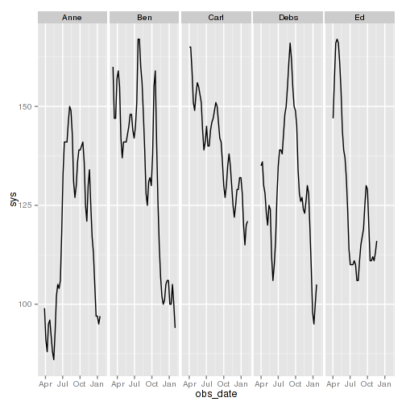
"Tee" piping: %T>%
Lets you inject something into the pipe:
> d = data.frame(x=1:10, y=runif(10))
> d %T>% plot() %$% sum(x+y)
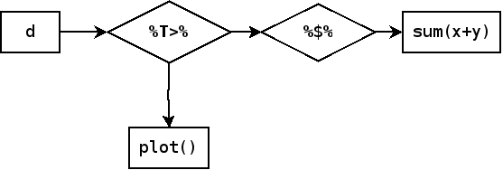
"Back" piping: %<>%
Easy updating of piped objects:
> x = 1:10
> x %<>% log(base=10) %>% sqrt()
> x
[1] 0.0000000 0.5486620 0.6907396 0.7759252 0.8360443 0.8821288 0.9192921
[8] 0.9503105 0.9768534 1.0000000
Shortcut for
> x = 1:10
> x <- x %>% log(base=10) %>% sqrt()
magrittr + tidyr
Remember...
> bps = separate(
separate(
gather(bpd, Week, BP, Week1:Week4),
BP, c("sys","dia"), "/", convert=TRUE, extra="drop"
),
Week, c("X","Week"), 4, convert=TRUE)
Can do with pipes:
Name Age Start Week1 Week2 Week3 Week4
1 Anne 35 2014-03-27 100/80 140/70 100/75 120/90
2 Ben 41 2014-03-09 110/65 115/80 100/65 135/70
3 Carl 33 2014-04-02 125/80 140/90 <NA> <NA>
4 Debs 27 2014-04-01 100/65 115/85 120/80 <NA>
5 Ed 22 2014-04-02 115/75 90/75 110/65 120/75
> bps = bpd %>%
gather(Week, BP, Week1:Week4) %>%
separate(BP, c("sys","dia"),"/", extra="drop", convert=TRUE) %>%
separate(Week, c("X","Week"), 4, convert=TRUE)
> head(bps)
Name Age Start X Week sys dia
1 Anne 35 2014-03-27 Week 1 100 80
2 Ben 41 2014-03-09 Week 1 110 65
3 Carl 33 2014-04-02 Week 1 125 80
4 Debs 27 2014-04-01 Week 1 100 65
5 Ed 22 2014-04-02 Week 1 115 75
6 Anne 35 2014-03-27 Week 2 140 70
dplyr
useful functions for tidy data
Selecting - chooses columns
> bps %>% select(1,2,3) %>% head() # pipe into head
Name Age Start
1 Anne 35 2014-03-27
2 Ben 41 2014-03-09
3 Carl 33 2014-04-02
4 Debs 27 2014-04-01
5 Ed 22 2014-04-02
6 Anne 35 2014-03-27
> bps %>% select(Name, Start) %>% head()
Name Start
1 Anne 2014-03-27
2 Ben 2014-03-09
3 Carl 2014-04-02
4 Debs 2014-04-01
5 Ed 2014-04-02
6 Anne 2014-03-27
> bps %>% select(-X) %>% head()
Name Age Start Week sys dia
1 Anne 35 2014-03-27 1 100 80
2 Ben 41 2014-03-09 1 110 65
3 Carl 33 2014-04-02 1 125 80
4 Debs 27 2014-04-01 1 100 65
5 Ed 22 2014-04-02 1 115 75
6 Anne 35 2014-03-27 2 140 70
> bps %<>% select(-X) # note backpipe operator here!
Filtering - chooses rows
> bps %>% filter(Name=="Anne")
Name Age Start Week sys dia
1 Anne 35 2014-03-27 1 100 80
2 Anne 35 2014-03-27 2 140 70
3 Anne 35 2014-03-27 3 100 75
4 Anne 35 2014-03-27 4 120 90
> bps %>% filter(sys >= 140 & dia >=80)
Name Age Start Week sys dia
1 Carl 33 2014-04-02 2 140 90
Mutating - adding columns
> bps %>% mutate(obs_date = Start + weeks(Week-1))
Name Age Start Week sys dia obs_date
1 Anne 35 2014-03-27 1 100 80 2014-03-27
2 Ben 41 2014-03-09 1 110 65 2014-03-09
3 Carl 33 2014-04-02 1 125 80 2014-04-02
4 Debs 27 2014-04-01 1 100 65 2014-04-01
5 Ed 22 2014-04-02 1 115 75 2014-04-02
6 Anne 35 2014-03-27 2 140 70 2014-04-03
7 Ben 41 2014-03-09 2 115 80 2014-03-16
8 Carl 33 2014-04-02 2 140 90 2014-04-09
9 Debs 27 2014-04-01 2 115 85 2014-04-08
10 Ed 22 2014-04-02 2 90 75 2014-04-09
11 Anne 35 2014-03-27 3 100 75 2014-04-10
12 Ben 41 2014-03-09 3 100 65 2014-03-23
13 Carl 33 2014-04-02 3 NA NA 2014-04-16
14 Debs 27 2014-04-01 3 120 80 2014-04-15
15 Ed 22 2014-04-02 3 110 65 2014-04-16
16 Anne 35 2014-03-27 4 120 90 2014-04-17
17 Ben 41 2014-03-09 4 135 70 2014-03-30
18 Carl 33 2014-04-02 4 NA NA 2014-04-23
19 Debs 27 2014-04-01 4 NA NA 2014-04-22
20 Ed 22 2014-04-02 4 120 75 2014-04-23
> # get rid of missing data:
> bps %<>% mutate(obs_date = Start + weeks(Week-1)) %>%
filter(!is.na(sys))
> head(bps)
Name Age Start Week sys dia obs_date
1 Anne 35 2014-03-27 1 100 80 2014-03-27
2 Ben 41 2014-03-09 1 110 65 2014-03-09
3 Carl 33 2014-04-02 1 125 80 2014-04-02
4 Debs 27 2014-04-01 1 100 65 2014-04-01
5 Ed 22 2014-04-02 1 115 75 2014-04-02
6 Anne 35 2014-03-27 2 140 70 2014-04-03
Sorting
> bps %>% arrange(Name,-sys)
Name Age Start Week sys dia obs_date
1 Anne 35 2014-03-27 2 140 70 2014-04-03
2 Anne 35 2014-03-27 4 120 90 2014-04-17
3 Anne 35 2014-03-27 1 100 80 2014-03-27
4 Anne 35 2014-03-27 3 100 75 2014-04-10
5 Ben 41 2014-03-09 4 135 70 2014-03-30
6 Ben 41 2014-03-09 2 115 80 2014-03-16
7 Ben 41 2014-03-09 1 110 65 2014-03-09
8 Ben 41 2014-03-09 3 100 65 2014-03-23
9 Carl 33 2014-04-02 2 140 90 2014-04-09
10 Carl 33 2014-04-02 1 125 80 2014-04-02
11 Debs 27 2014-04-01 3 120 80 2014-04-15
12 Debs 27 2014-04-01 2 115 85 2014-04-08
13 Debs 27 2014-04-01 1 100 65 2014-04-01
14 Ed 22 2014-04-02 4 120 75 2014-04-23
15 Ed 22 2014-04-02 1 115 75 2014-04-02
16 Ed 22 2014-04-02 3 110 65 2014-04-16
17 Ed 22 2014-04-02 2 90 75 2014-04-09
dplyr grouping
group_by specifies a grouping of a data frame:
Source: local data frame [17 x 7]
Groups: Name
Name Age Start Week sys dia obs_date
1 Anne 35 2014-03-27 1 100 80 2014-03-27
2 Ben 41 2014-03-09 1 110 65 2014-03-09
3 Carl 33 2014-04-02 1 125 80 2014-04-02
4 Debs 27 2014-04-01 1 100 65 2014-04-01
5 Ed 22 2014-04-02 1 115 75 2014-04-02
6 Anne 35 2014-03-27 2 140 70 2014-04-03
7 Ben 41 2014-03-09 2 115 80 2014-03-16
8 Carl 33 2014-04-02 2 140 90 2014-04-09
9 Debs 27 2014-04-01 2 115 85 2014-04-08
10 Ed 22 2014-04-02 2 90 75 2014-04-09
11 Anne 35 2014-03-27 3 100 75 2014-04-10
12 Ben 41 2014-03-09 3 100 65 2014-03-23
13 Debs 27 2014-04-01 3 120 80 2014-04-15
14 Ed 22 2014-04-02 3 110 65 2014-04-16
15 Anne 35 2014-03-27 4 120 90 2014-04-17
16 Ben 41 2014-03-09 4 135 70 2014-03-30
17 Ed 22 2014-04-02 4 120 75 2014-04-23
which you can then pass to summarize
> bps %>% group_by(Name) %>%
summarize(min=min(sys), max=max(sys))
Source: local data frame [5 x 3]
Name min max
1 Anne 100 140
2 Ben 100 135
3 Carl 125 140
4 Debs 100 120
5 Ed 90 120
Having the data in a tidy format makes grouping by different
variables easy:
- What was each person's highest systolic BP
- What was the highest BP measured in each week?
> bps %>% group_by(Name) %>% filter(sys==max(sys))
Source: local data frame [5 x 7]
Groups: Name
Name Age Start Week sys dia obs_date
1 Anne 35 2014-03-27 2 140 70 2014-04-03
2 Carl 33 2014-04-02 2 140 90 2014-04-09
3 Debs 27 2014-04-01 3 120 80 2014-04-15
4 Ben 41 2014-03-09 4 135 70 2014-03-30
5 Ed 22 2014-04-02 4 120 75 2014-04-23
> bps %>% group_by(Week) %>% filter(sys==max(sys))
Source: local data frame [5 x 7]
Groups: Week
Name Age Start Week sys dia obs_date
1 Carl 33 2014-04-02 1 125 80 2014-04-02
2 Anne 35 2014-03-27 2 140 70 2014-04-03
3 Carl 33 2014-04-02 2 140 90 2014-04-09
4 Debs 27 2014-04-01 3 120 80 2014-04-15
5 Ben 41 2014-03-09 4 135 70 2014-03-30
Exercise: do those on the untidy, spreadsheet format data.
dplyr data joins
Suppose the data is in two tables, connected by the Name
column:
- People data:
Name Age Start
1 Anne 35 2014-03-27
2 Ben 41 2014-03-09
3 Carl 33 2014-04-02
4 Debs 27 2014-04-01
5 Ed 22 2014-04-02
- Measurement data:
Name Week sys dia
1 Anne 1 99 62
2 Ben 1 160 62
3 Carl 1 165 45
4 Debs 1 135 48
5 Ed 1 147 68
6 Anne 2 91 61
We can join them using join operations
> left_join(bpsdata, people) %>% head(10)
Name Week sys dia Age Start
1 Anne 1 99 62 35 2014-03-27
2 Ben 1 160 62 41 2014-03-09
3 Carl 1 165 45 33 2014-04-02
4 Debs 1 135 48 27 2014-04-01
5 Ed 1 147 68 22 2014-04-02
6 Anne 2 91 61 35 2014-03-27
7 Ben 2 147 60 41 2014-03-09
8 Carl 2 165 42 33 2014-04-02
9 Debs 2 136 48 27 2014-04-01
10 Ed 2 157 71 22 2014-04-02
Hence we can compute the observation date by a join and a mutate:
> left_join(bpsdata, people) %>%
mutate(obs_date = Start+dweeks(Week-1)) %>%
head(10)
Name Week sys dia Age Start obs_date
1 Anne 1 99 62 35 2014-03-27 2014-03-27
2 Ben 1 160 62 41 2014-03-09 2014-03-09
3 Carl 1 165 45 33 2014-04-02 2014-04-02
4 Debs 1 135 48 27 2014-04-01 2014-04-01
5 Ed 1 147 68 22 2014-04-02 2014-04-02
6 Anne 2 91 61 35 2014-03-27 2014-04-03
7 Ben 2 147 60 41 2014-03-09 2014-03-16
8 Carl 2 165 42 33 2014-04-02 2014-04-09
9 Debs 2 136 48 27 2014-04-01 2014-04-08
10 Ed 2 157 71 22 2014-04-02 2014-04-09
ggplot2
A plotting system, works best with tidy data, implementing a
grammar of graphics
Concepts
- aesthetics
- An aesthetic is a mapping of a data frame column
to some aspect of the thing you are trying to draw - such as
position, size, colour.
- geom
- A geom is a type of graphic that does the mapping
of aesthetics to actual visible things on the page - such
as point, lines, rectangles, boxplots
- layer
- The plot is built up using layers, starting with the data,
and adding elements until the result is printed.
Example
The geom_point geom uses x, y, and colour aesthetics (amongst others)
> library(ggplot2)
> ggplot(bps2, aes(x=obs_date, y=sys, colour=Name)) + geom_point()
Add a smoothing layer
> ggplot(bps2, aes(x=Week, y=sys)) + geom_point() +
stat_smooth(method="loess")
Lines need the additional group aesthetic
to define what to join up:
> ggplot(bps2, aes(x=obs_date, y=sys, group=Name, colour=Name)) +
geom_line()
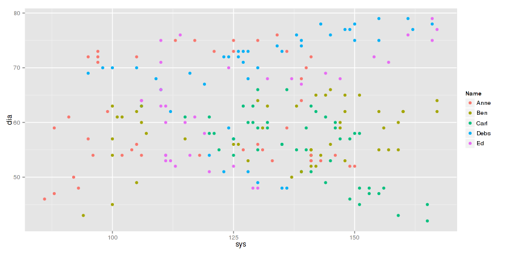
> ggplot(bps2, aes(x=Week, y=sys, group=Name, colour=Name)) +
geom_line() +
geom_point()
To plot more than one variable, specify the aesthetic in the geom.
Getting the legend right takes a bit of fiddling:
> ggplot(bps2 %>% filter(Name=="Carl"), aes(x=Week)) +
geom_line(aes(y=sys, col="sys"), lwd=1) +
geom_line(aes(y=dia, col="dia"), lwd=1) +
scale_colour_manual(name="Phase",
values=c(sys="red",dia="blue")) +
ylab("mmHg")
Or tidy the variables using gather:
> bps2 %>% filter(Name=="Carl") %>%
gather(Phase, mmHg, sys:dia) %>% arrange(Week) %>% head()
Name Age Start Week obs_date Phase mmHg
1 Carl 33 2014-04-02 1 2014-04-02 sys 165
2 Carl 33 2014-04-02 1 2014-04-02 dia 45
3 Carl 33 2014-04-02 2 2014-04-09 sys 165
4 Carl 33 2014-04-02 2 2014-04-09 dia 42
5 Carl 33 2014-04-02 3 2014-04-16 sys 159
6 Carl 33 2014-04-02 3 2014-04-16 dia 43
We pipe that into ggplot and the legend is
then automatically nice:
> bps2 %>% filter(Name=="Carl") %>% gather(Phase, mmHg, sys:dia) %>%
ggplot(
aes(x=Week, y=mmHg, group=Phase, col=Phase)
) +
geom_line()
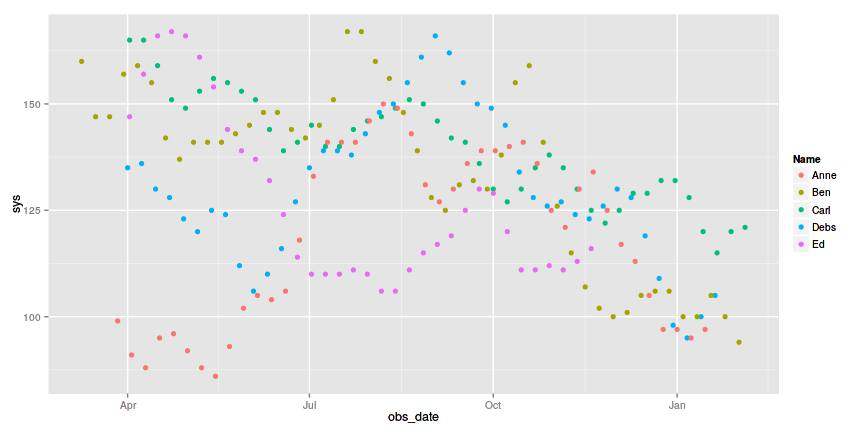
Some other geoms
histograms
> ggplot(bps2, aes(x=sys)) + geom_histogram(binwidth=1)
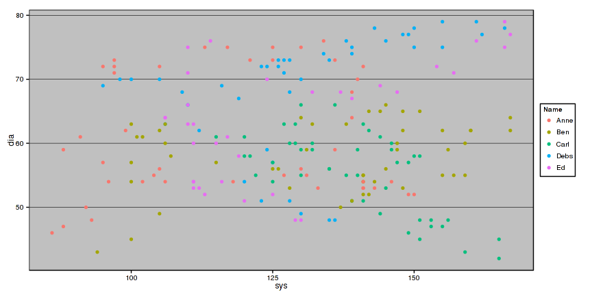
> ggplot(bps2, aes(x=sys, fill=Name)) + geom_histogram(binwidth=1)
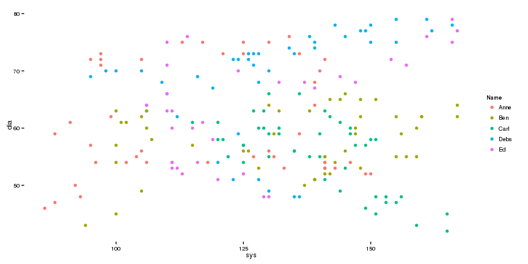
boxplots
The boxplot geom uses group to
define the set of points in each boxplot:
> ggplot(bps2, aes(x=Name, y=sys, group=Name)) + geom_boxplot()
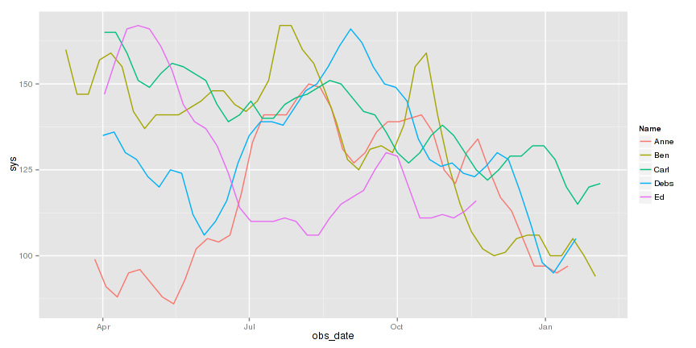
pie charts
> ggplot(bps2, aes(size=sys)) + geom_pie()
Error in eval(expr, envir, enclos): could not find function "geom_pie"
Saving and Theming
Layers and plots can be saved:
> gg = ggplot(bps2, aes(x=sys, y=dia, col=Name))
nothing plots until you add geom layers, and print:
> g = gg + geom_point(aes(size=Week))
> g
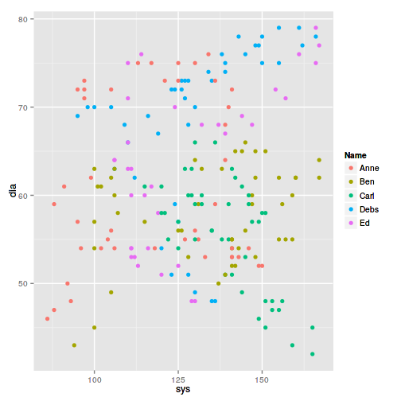
themes
Add a theme function to modify a plot's appearance
with the ggthemes package you get some more themes:
> library(ggthemes)
> g + theme_excel()
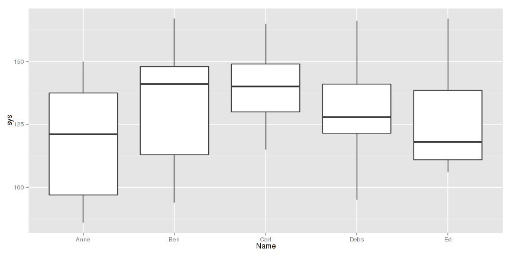
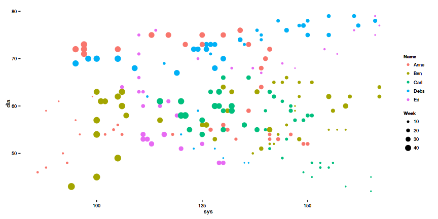
and even...
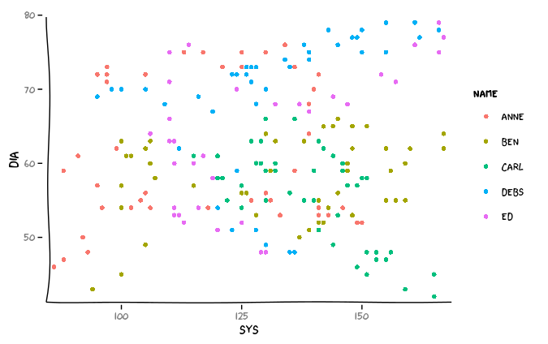
inspired by XKCD comic


Faceting
Faceting is breaking a plot into several mini-plots
by levels of a factor
> ggplot(bps2, aes(x=obs_date, y=sys)) +
geom_line() + stat_smooth(method="loess") +
facet_wrap(~Name,nrow=1) +
theme_stata()
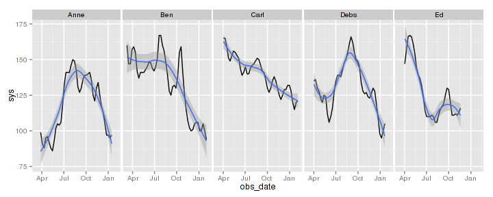
By default, each facet uses the same fixed x and y axis range.
This can be changed to "free", so that axes fit the data in the
facet.
Here's a ribbon geom with free y axis and common x axis:
> ggplot(bps2, aes(x=obs_date, ymin=dia, ymax=sys, fill=Name)) +
geom_ribbon(alpha=0.5) +
facet_wrap(~Name, ncol=1, scales="free_y")
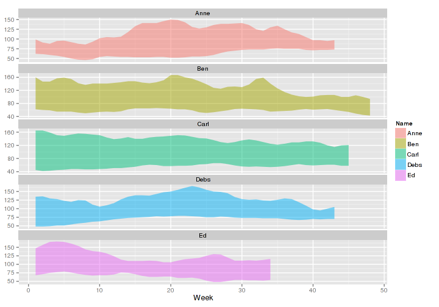
ggvis
Its like ggplot for web pages:
> library(ggvis)
> mtcars %>% ggvis(x = ~wt, y = ~mpg) %>% layer_points()
not quite as feature-ful as ggplot:
> bps2 %>% ggvis(x=~obs_date, y=~sys, stroke=~Name, fill=~Name) %>%
group_by(Name) %>% layer_points() %>% layer_smooths(se=TRUE)
Has interactive features:
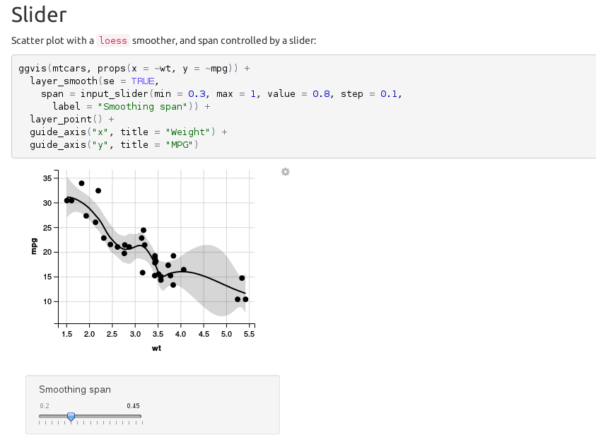
devtools
In the old days...
- Start R
- Edit your R code
- Outside R, run
R CMD BUILD package
- Back in R, run
install.packages("package", lib.loc="./package")
- Realise you didn't uninstall the old code
- Try again
- Discover your C code is still loaded
- Quit and put everything in one big script
With devtools
create("package")- edit
package/R/function.R
load_all("package")- repeat 2-3 until bugs in code = 0
devtools takes all the pain out of developing. It removes old R code and
reloads new code, recompiles and loads C and Fortran etc.
roxygen2
In the old days...
- Create your function:
foo=function(a,b=1){a+b}
- Use
prompt(foo) to create a broken documentation skeleton
in the wrong place:
\name{foo}
\alias{foo}
%- Also NEED an '\alias' for EACH other topic documented here.
\title{
%% ~~function to do ... ~~
}
\description{
%% ~~ A concise (1-5 lines) description of what the function does. ~~
}
\usage{
foo(a, b = 1)
}
%- maybe also 'usage' for other objects documented here.
\arguments{
\item{a}{
%% ~~Describe \code{a} here~~
}
\item{b}{
%% ~~Describe \code{b} here~~
}
}
\details{
%% ~~ If necessary, more details than the description above ~~
}
\value{
%% ~Describe the value returned
%% If it is a LIST, use
%% \item{comp1 }{Description of 'comp1'}
%% \item{comp2 }{Description of 'comp2'}
%% ...
}
ETC
- Edit it, put it in the right place
- Build your package
- Manually create DESCRIPTION and NAMESPACE files
- Edit your R code and forget it doesn't match the docs any more
- Give up and go live in a shed
testthat
Code testing has various purposes:
- Check your code produces right answers
- Check your code produces right errors
- Check your code does only what you say it does
- others?
The testthat package lets you write expectations as
R expressions of what should happen:
> foo = function(a, b=1){ a + b }
> expect_equal(foo(1), 2)
> expect_equal(foo(1, 2), 3)
> expect_error(foo())
If the expection is correct, nothing happens. Otherwise:
> expect_equal(foo(1), 3)
Error: foo(1) not equal to 3
Mean relative difference: 0.3333333
Error in foo(): argument "a" is missing, with no default
You can collect expectations into little suites:
> test_that("foo works", {
expect_equal(foo(1, 2), 3, info="add 2 numbers")
expect_equal(foo(1), 2, info="default b is 1")
expect_error(foo(), info="need one arg")
expect_error(foo(1,2,3,4,5), info="too many args")
})
Now if I change the function definition, I can see
what tests fail:
> foo = function(a=1,b=3,c=7){a+b+c}
> test_that("when tests fail", {
expect_equal(foo(1, 2), 3, info="add 2 numbers")
expect_equal(foo(1), 2, info="default b is 1")
expect_error(foo(), info="need one arg")
expect_error(foo(1,2,3,4,5), info="too many args")
})
Error: Test failed: 'when tests fail'
* Not expected: foo(1, 2) not equal to 3
Mean relative difference: 2.333333
add 2 numbers.
* Not expected: foo(1) not equal to 2
Mean relative difference: 4.5
default b is 1.
* Not expected: foo() code did not generate an error
need one arg.
Test suites can be put into package test folders and run
by devtools
Automated build systems can run tests and report errors!
Guess how the testthat package tests itself?
Test data as well as code
> test_that("BP data okay", {
expect_true(is.factor(bps2$Name))
expect_true(is.numeric(bps2$sys))
expect_true(is.numeric(bps2$dia))
expect_true(all(bps2$sys < 200), info="suspiciously high sys values")
expect_true(all(bps2$sys > 10), info="suspiciosly low sys values")
})
>
> test_that("BP data size", {
expect_more_than(nrow(bps2), 10, info="not enough rows of data")
expect_less_than(nrow(bps2), 200, info="too many rows of data")
})
Error: Test failed: 'BP data size'
Not expected: nrow(bps2) not less than 200. Difference: -13
too many rows of data.